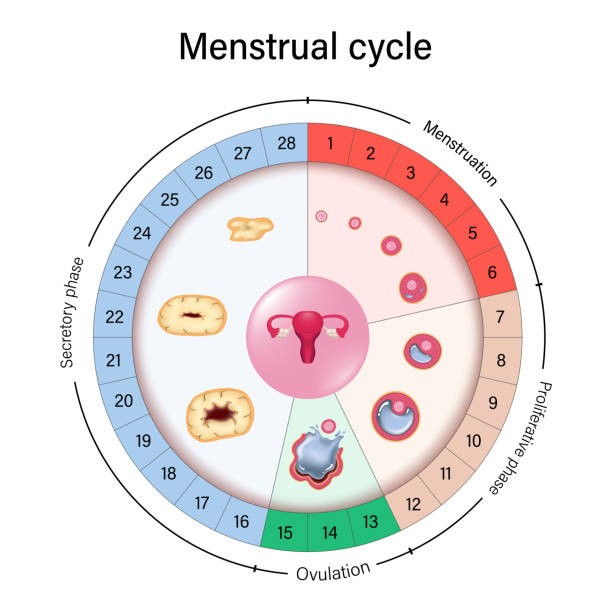
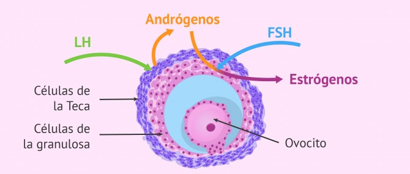
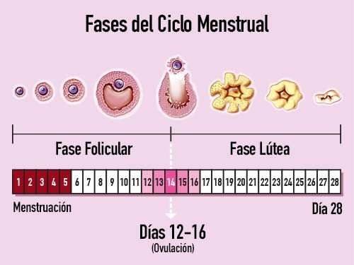
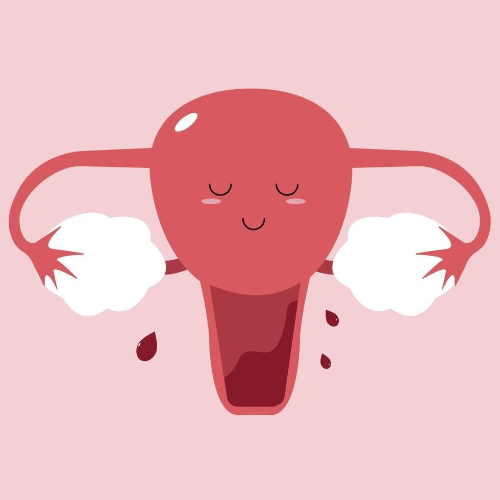
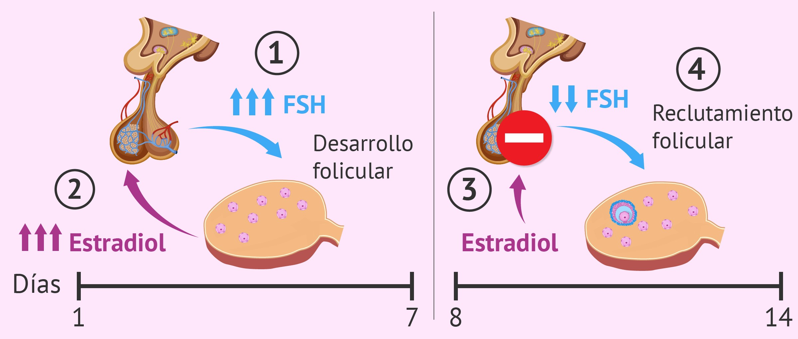
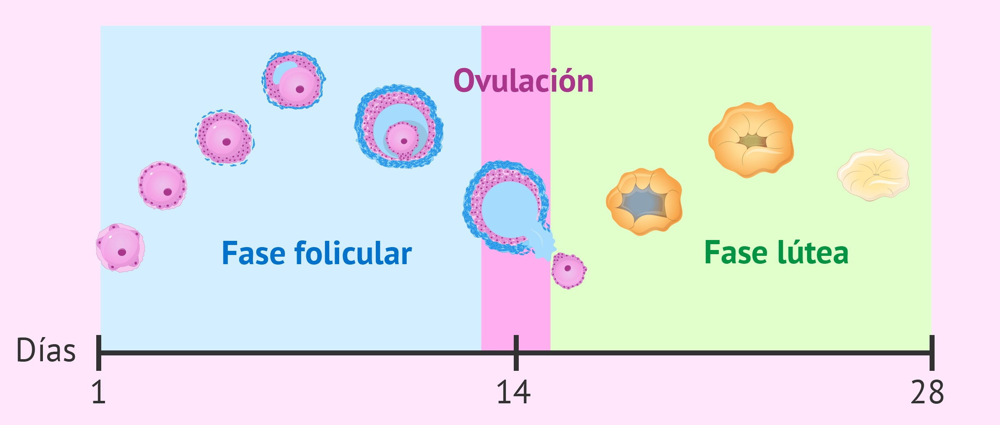
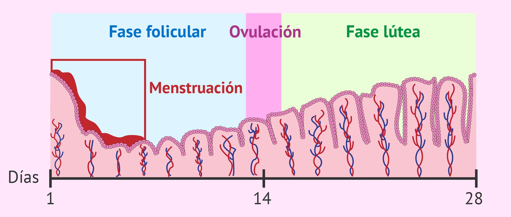
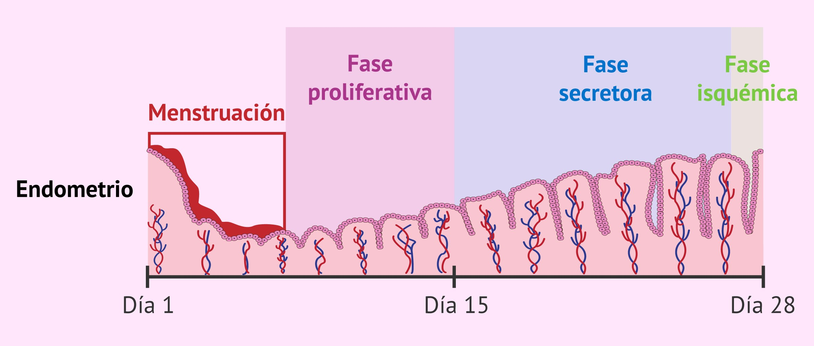

BIOLOGIA
TALLER BIOLOGIA
CICLO MENSTRUAL

Nemo recusandae incidunt amet unde expedita.
El ciclo menstrual es un periodo de aproximadamente 28 días en el que la mujer experimenta cambios en su cuerpo, especialmente en el útero y los ovarios de su sistema reproductor, por la acción de las hormonas sexuales femeninas.
Todos estos cambios tienen como objetivo preparar a la mujer para un posible embarazo, desde que inicia su etapa reproductiva con la primera menstruación, hasta que llega la menopausia.
La duración del ciclo puede variar entre 23 y 35 días en función de la mujer, ya que algunas tienen ciclos más cortos o más largos. No obstante, las etapas del ciclo menstrual que vamos a comentar son las mismas en todos los casos.
Hormonas femeninas
Para entender como funciona el ciclo menstrual, en primer lugar es necesario conocer las hormonas sexuales femeninas, ya que son las encargadas de regular todo este proceso.
Las hormonas sexuales de la mujer se producen en su hipófisis (FSH y LH) y en sus ovarios (estrógenos y progesterona). A continuación, vamos a comentar cada una de ellas:
FSH
hormona folículo estimulante. La FSH empieza a secretarse al inicio del ciclo sexual y su función consiste en estimular al ovario para que se desarrollen los folículos primordiales. Los folículos son unas estructuras llenas de líquidos que contienen a los óvulos en diferentes estados de maduración.
LH
hormona luteinizante. Es hormona es la encargada de desencadenar la ovulación una vez el folículo que contiene al óvulo haya madurado por completo.
Estrógenos
son las hormonas secretadas por el ovario a medida que los folículos se van desarrollando. Los estrógenos tienen una función reguladora de todo el ciclo menstrual, además de intervenir en el desarrollo sexual de la mujer.
Progesterona
es secretada por el ovario después de la ovulación. Su función principal consiste en aumentar el grosor endometrial para que el embrión pueda implantar y tenga lugar el embarazo.

Fases del ciclo menstrual
Al inicio del ciclo menstrual, las hormonas sexuales se encuentran en estado basal, es decir, con una concentración mínima, ya que aún no han comenzado a producirse.

Menstruación
El ciclo menstrual se inicia con la bajada de la menstruación. Este sangrado menstrual se corresponde con la descamación del endometrio debido a que no ha habido implantación embrionaria.
El endometrio es el revestimiento interno del útero, el cual se renueva todos los meses con cada ciclo menstrual con el objetivo de albergar un embarazo.
Si quieres saber más sobre este tema, te recomendamos leer el siguiente artículo: ¿Qué es el endometrio?

Fase folicular
La fase folicular, también conocida como fase proliferativa o preovulatoria, consiste en un proceso de crecimiento de los folículos ováricos que abarca desde el inicio de la menstruación hasta la ovulación.
Cuando la mujer llega a la pubertad, tiene una reserva ovárica de unos 500.000 folículos primordiales en sus ovarios. Éstos permanecen en estado latente, a la espera de ser seleccionados para desarrollarse en cada ciclo menstrual.
El aumento de la FSH hace que varios de estos folículos empiecen a crecer y migren hacia la superficie del ovario, constituyéndose una cohorte folicular.
El desarrollo de la cohorte folicular provoca la síntesis y secreción del estradiol, cuya función de regulación consiste en bloquear la producción de FSH por parte de la hipófisis.
La consecuencia de esto es un reclutamiento folicular: al disminuir el nivel de FSH, los folículos ováricos no son capaces de sobrevivir y continuar con su desarrollo. Tan solo uno de ellos llegará a madurar completamente y se convertirá en un folículo preovulatorio final.
Este folículo dominante es el denominado folículo de Graaf, el cual llega a medir unos 18 mm antes de la ovulación. El resto de folículos quedarán bloqueados y degenerarán.
Además, los estrógenos producidos durante esta fase proliferativa también contribuyen a la aparición de un moco cervical más acuoso y elástico, el cual favorece la entrada de espermatozoides. Los estrógenos también actúan sobre el endometrio, favoreciendo su engrosamiento.

Fase ovulatoria
Alrededor del día 14 del ciclo menstrual, la hipófisis produce una subida de los niveles de LH, lo cual se conoce como pico de LH y que provoca la ovulación.
La ovulación es el proceso por el cual el folículo de Graaf se rompe y el óvulo maduro que contiene en su interior es liberado a la trompa de Falopio.
Los días fértiles son aquellos cercanos a la ovulación, es decir, se localizan hacia la mitad del ciclo menstrual. Durante este periodo, existe una mayor probabilidad de embarazo si se mantienen relaciones sexuales sin protección.
Habitualmente, en cada ciclo menstrual, un único óvulo maduro es expulsado en una de las trompas de Falopio. En ocasiones, puede suceder la ovulación de dos folículos, aumentando así la probabilidad de tener un embarazo de mellizos.
El óvulo que se encuentra ahora en la trompa de Falopio permanecerá a la espera de un espermatozoide que pueda fecundarlo si ha habido relaciones sexuales. Si esto no sucede en las 24 horas siguientes a la ovulación, el óvulo envejecerá y ya no podrá fecundarse.

Durante esta fase van madurando los folículos hasta que llegan al estadio de folículo de Graaf, que es el más maduro antes de que se produzca el momento de la ovulación.
Fase lútea
La fase lútea, también llamada fase secretora o postovulatoria, es la que empieza justo después de la ovulación y que dura hasta el final del ciclo menstrual, es decir, hasta que vuelve a haber un sangrado menstrual.
El folículo roto se transforma en un cuerpo amarillento denominado cuerpo amarillo o cuerpo lúteo. Este cuerpo es el responsable de producir estrógenos y progesterona, las dos hormonas que van a actuar sobre el endometrio.
En este momento, la progesterona es ahora la encargada de modificar el moco cervical para que se vuelva nuevamente impenetrable por los espermatozoides.

El endometrio, que es la capa más interna del útero, va sufriendo cambios a lo largo del ciclo menstrual en función de la concentración de estrógenos y progesterona en cada etapa. Al inicio del ciclo menstrual, las hormonas sexuales disminuyen su concentración y esto provoca la descamación del endometrio con la menstruación. A continuación, el endometrio volverá a engrosarse y a sufrir cambios en su composición a medida que aumentan los estrógenos y la progesterona.
Después de la ovulación, en la fase lútea, el endometrio tiene un aspecto trilaminar y se vuelve receptivo. Esto aumenta las probabilidades de implantación del embrión una vez que éste llega al útero. Si finalmente no tiene lugar el embarazo, el endometrio vuelve a desprenderse y se inicia un nuevo ciclo menstrual.
Fase isquémica e inicio de un nuevo ciclo
En caso de que el óvulo liberado no sea fecundado por un espermatozoide, el cuerpo lúteo desaparece. En consecuencia, la producción de estrógenos y progesterona disminuye gradualmente en lo que se conoce como fase isquémica del ciclo menstrual.
La disminución de las hormonas sexuales provoca que el endometrio se descame y se elimine por la vagina produciendo de nuevo la menstruación.

El ciclo menstrual consta de varias fases: menstruación, fase proliferativa, fase secretora o lútea y fase isquémica. Esta última fase del ciclo menstrual es cuando desaparece el cuerpo lúteo y, además, disminuye la cantidad de estrógenos y progesterona.
Al disminuir los niveles de estas hormonas sexuales, el endometrio se descama y comienza de nuevo la menstruación. Esta fase isquémica no tendría lugar si ocurriera la fecundación del óvulo.